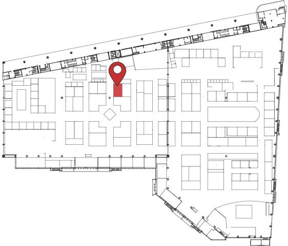

Encontranos en ARTEBA
Stand E41
Praxis, galería de arte con sedes en Nueva York y Buenos Aires, presenta en su Stand E 41 de Arteba 2014 la muestra Detrás de lo invisible. Se exhibirán fotografías del reconocido artista argentino contemporáneo Jorge Miño.
Praxis, the art gallery with locations in New York and Buenos Aires, is pleased to present at ArteBA - Booth E41, the exhibition Behind the Invisible, by the prestigious contemporary Argentinean photographer Jorge Miño.

Será inaugurada al público el viernes 23 de Mayo a las 14 hs. Podrá visitarse hasta el lunes 26 de mayo en el horario de 14 a 21.
La dirección es La Rural Av. Sarmiento 2704.